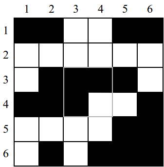

Castor a reçu un message secret sous la forme d'un tableau de cases blanches et noires. Malheureusement, 4 cases du tableau ont été détruites.
Cette perte d'information était heureusement prévue et le message contient
des informations supplémentaires pour tenter de le réparer.
Ainsi, chaque case dans la colonne la plus à droite (colonne 6) est colorée de façon
à ce que le nombre de cases noires par ligne soit pair. De même,
chaque case dans la ligne du bas (ligne 6) est colorée de façon
à ce que le nombre de cases noires par colonne soit pair.
Par exemple, sur la ligne 1, si l'on ne tient pas compte de la case de la colonne 6, il y a un nombre impair (3) de cases noires. Il a donc fallu noircir la case de la colonne 6, pour avoir au total un nombre pair (4) de cases noires.
Parmi les 4 possibilités suivantes pour remplir la zone détruite, une seule valide la règle de remplissage de la colonne 6 et de la ligne 6. Laquelle ?
On parvient à éliminer les solutions proposées en établissant les caractéristiques de la solution ligne par ligne :
La réponse est la B. Les cases de la réponse B replacées dans le message codé permettent bien que chaque ligne, et chaque colonne comporte un nombre pair de cases noires.

La transmission d'information numérique à travers les réseaux de communication occasionne inévitablement des pertes d'informations liées aux supports matériels de communication. Toutes les informations que nous échangeons entre nous par ces moyens modernes sont donc régulièrement abîmées puis réparées ! Castor utilise ici un technique de code correcteur d'erreurs basée sur les bits de parité : le message initial est transmis avec un peu de redondance pour permettre de détecter (éventuellement) à la réception la perte d'information et tenter de la réparer ensuite.